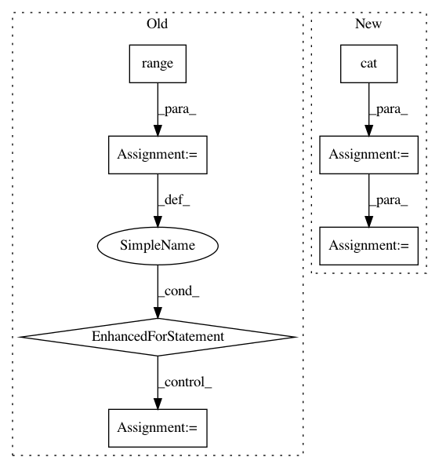

e09e6dc678f9b9c198ed361eea0dffa7749bc553,src/garage/torch/algos/vpg.py,VPG,train_once,#VPG#Any#Any#,130
Before Change
if self._minibatch_size else len(rewards_flat))
for epoch in range(self._max_optimization_epochs):
shuffled_ids = np.random.permutation(len(rewards_flat))
for start in range(0, len(rewards_flat), step_size):
ids = shuffled_ids[start:start + step_size]
loss = self._train(obs_flat[ids], actions_flat[ids],
rewards_flat[ids], advantages_flat[ids])
logger.log("Mini epoch: {} | Loss: {}".format(epoch, loss))
self._value_function.fit(paths)
After Change
obs_flat = torch.cat(filter_valids(obs, valids))
actions_flat = torch.cat(filter_valids(actions, valids))
rewards_flat = torch.cat(filter_valids(rewards, valids))
returns_flat = torch.cat(filter_valids(returns, valids))
advs_flat = self._compute_advantage(rewards, valids, baselines)
with torch.no_grad():
policy_loss_before = self._compute_loss_with_adv(
obs_flat, actions_flat, rewards_flat, advs_flat)
vf_loss_before = self._value_function.compute_loss(
obs_flat, returns_flat)
kl_before = self._compute_kl_constraint(obs)
self._train(obs_flat, actions_flat, rewards_flat, returns_flat,
advs_flat)
In pattern: SUPERPATTERN
Frequency: 3
Non-data size: 7
Instances
Project Name: rlworkgroup/garage
Commit Name: e09e6dc678f9b9c198ed361eea0dffa7749bc553
Time: 2020-05-01
Author: 43084978+yonghyuc@users.noreply.github.com
File Name: src/garage/torch/algos/vpg.py
Class Name: VPG
Method Name: train_once
Project Name: HyperGAN/HyperGAN
Commit Name: a178a47269013e94c4756f94a2c9a0c373e04a18
Time: 2021-01-02
Author: mikkel@255bits.com
File Name: examples/next-frame.py
Class Name: VideoFrameSampler
Method Name: seed
Project Name: cornellius-gp/gpytorch
Commit Name: 9b664bd7cd8dbb9657626166ba61887ed06774d7
Time: 2017-09-13
Author: gpleiss@gmail.com
File Name: gpytorch/utils/toeplitz.py
Class Name:
Method Name: index_coef_to_sparse